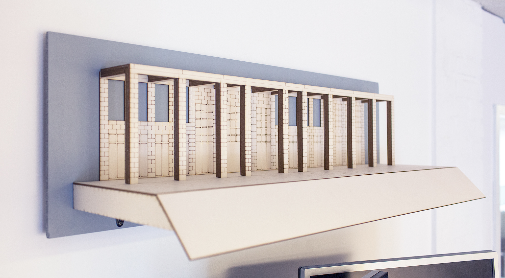
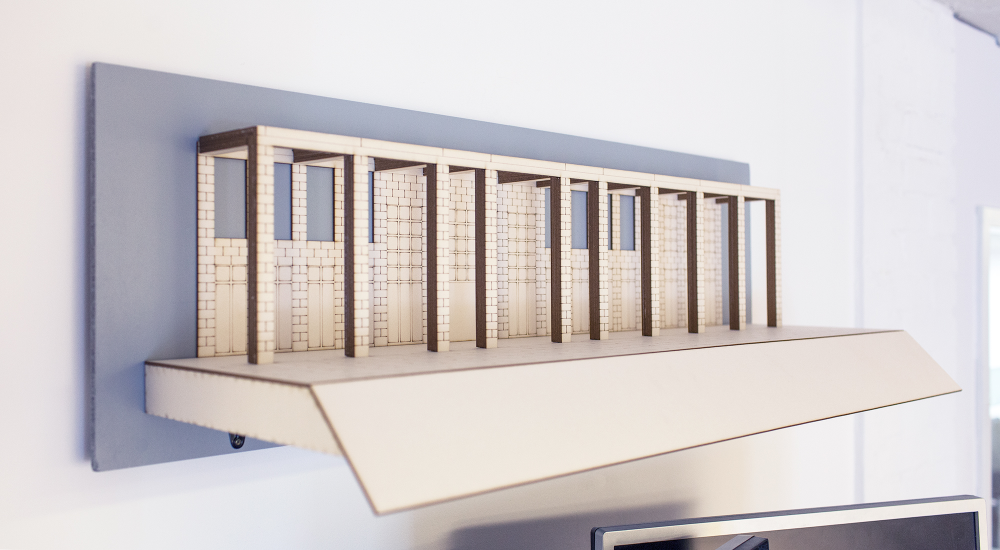
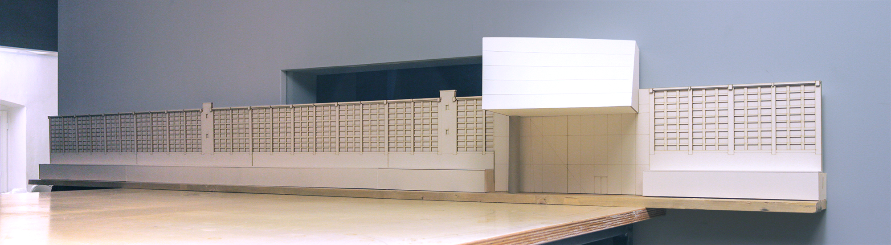
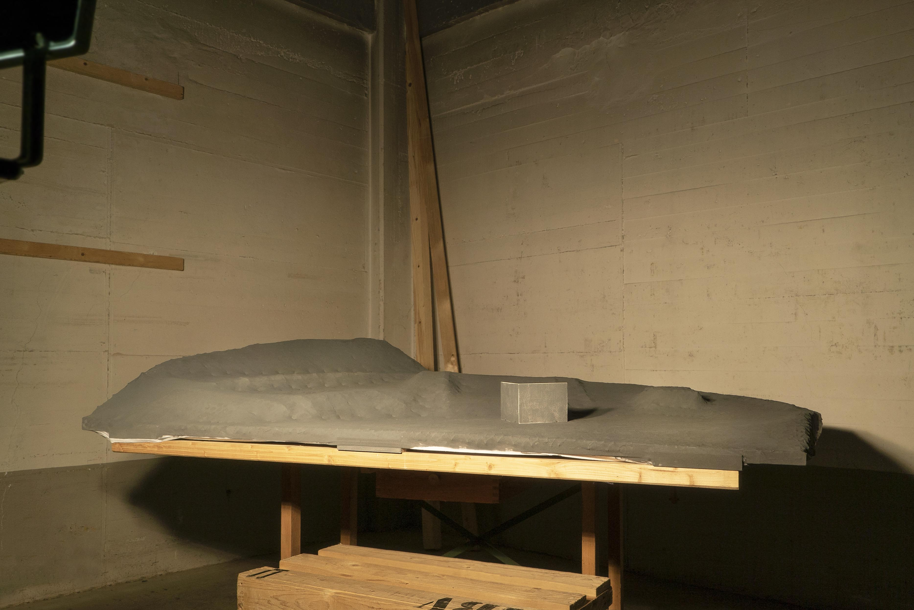
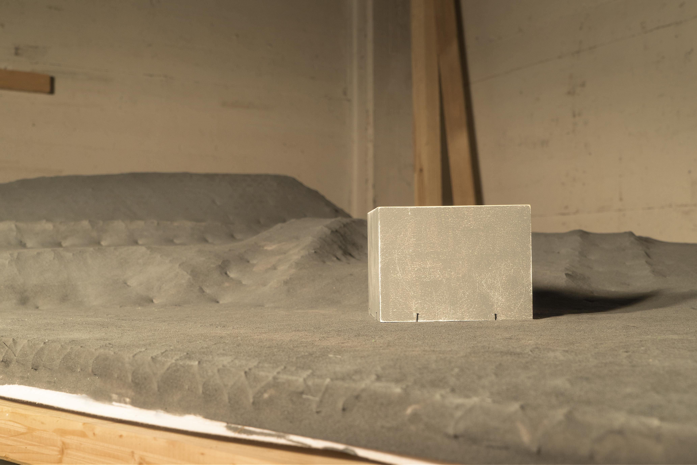
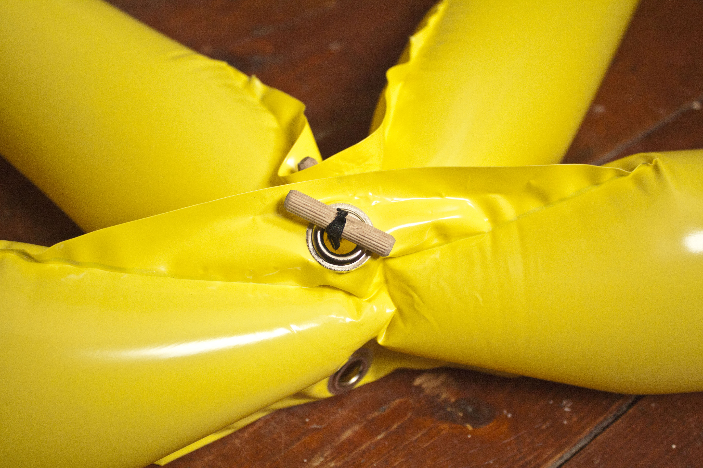
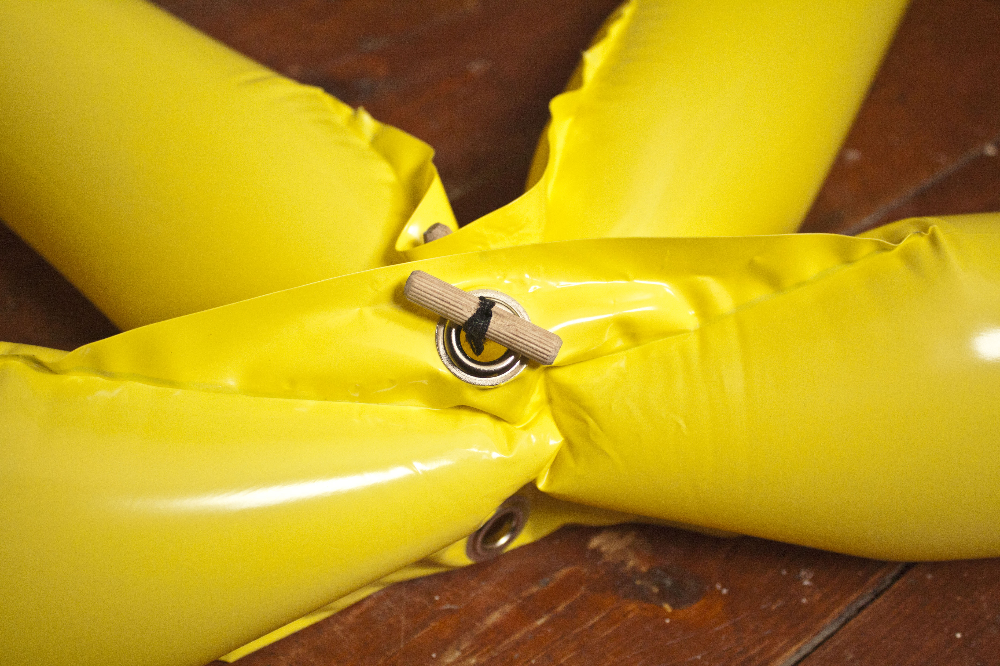

Juli 2018 - Bremen
Drei Mockups für das Deutschlandjahr
Wieder im Rahmen einer Urbanscreen-Produktion baute ich Modelle von der "Atlanta–Fulton Public Library" (Bauhaus Architekt Marcel Breuer), dem "Athenæum", einem Clubhaus deutscher Einwanderer im 19. Jahrhundert, sowie von der deutschen Botschaft in Washington D.C..
So viel deutsch? Das Goethe-Institut USA möchte das "Deutschlandjahr" zum Anlass nehmen, um die deutsch-amerikanische Freundschaft zu betonen. Das passiert nicht zuletzt auch über die Wahl der Gebäude, auf die projiziert werden soll.
{kind=link}
{kind=link}
 

{kind=link}

August 2017 - Bremen
Kleine EZB für große Luminale
Zur Produktion von Urbanscreens Cross Hatch baute ich ein Mockup der Europäischen Zentralbank, kurz EZB. Auf dem drei Meter breiten Schichtmodell aus Finnpappe wurde probe-projiziert. So konnten Animationen besser im Raum gedacht - und vorallem überdacht - werden, als am bloßen Bildschirm. Die Vorbereitung der Daten und Erstellung des Mockups geschah durch mich, gelasert wurde im Oldenburger FabLab. Danke Tjark.
{kind=link}

April bis August 2017 - Bremen
Die ersten Modelle
Gleich zu Anfang meines Praktikums bei Urbanscreen war ich beteiligt an der Produktion von "Small Talks", einer Geschichte über die Entstehung einer Sprache. Neben der Animation eines Teils dieser Show, sollte ich ein Modell der Frontfassade des Goethe-Institutes in Krakau erstellen. Vier Schichten Graupappe ergeben ein ungefähres Abbild der Tiefe aller Fassadenelemente:

Danach beginnt meine freiberufliche Zusammenarbeit mit Urbanscreen: Das zweite Modell sollte die Fassade des Rathauses in Barcelona werden und der Teilnahme am "La Mercè Festival" im September 2017 dienen:

Das dritte Modell entstand für die Zusammenarbeit Urbanscreens und dem Baumaschinen Hersteller Caterpillar. Dieser plante das Launching Event eines neuen Baggers im Trainings Center in Málaga, Spanien, mit einer Projektion zu feiern. Dieses Trainings Center ist eine 100 mal 60 Meter messende Sandkuhle, die ich in 25 Höhenprofile eingeteilt, gefräst und nachher mit Hasendraht, Leinen und Acrylfarbe zur Leinwand der Testprojektion hab werden lassen:
 {kind=link}
{kind=link}

März 2017 - Bremen
Kalimba- und Sansulabau
Nach meinem Bachelorabschluss im September 2017 habe ich mich an den Bau von Kalimbas und einer Sansula herangewagt. Auch Daumenpiano genannt, kommen diese Instrumente vorallem aus Afrika und Südamerika, werden ursprünglich gerne aus Schrott hergestellt und als Mitbringsel und Andenken verkauft. Ich machte mich daran, Mahagoni Holz zu shapen, Klangblätter aus einem Bandsägenblatt zu schneiden und Buchenfuniere zu wässern, biegen und leimen, sowie mich mit dem Verarbeiten von Fellen zu beschäftigen. Hier einige Ansichten verschiedener Ergebnisse.

Januar 2014 - Bremen
Raumökonomie mit Prof. Oliver Niewiadomski
Im Kurs "Raumökonomie" während meines Studiums, geleitet von Oliver Niewiadomski, entstand ein Konzept und Prototyp zum Thema "temporäre Räume". Durch Kombination mehrerer Inflatables, genauer gesagt Verknüpfung ihrer Gelenke, lassen sich verschieden geometrische Körper erzeugen. Theoretisch könnten diese Outdoor-Parties vor Unwetter schützen, Ausstellungsstände beherbergen oder als lebensgroßes Geometriespiel fungieren. Letztlich zählt jedoch eher die Erfahrung und Verarbeitung des Materials, sowie der Prozess zu einem modularen System.
 

{kind=link}